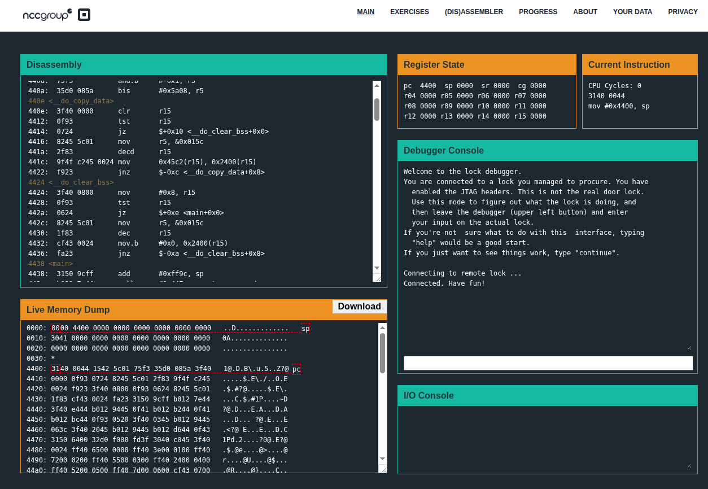
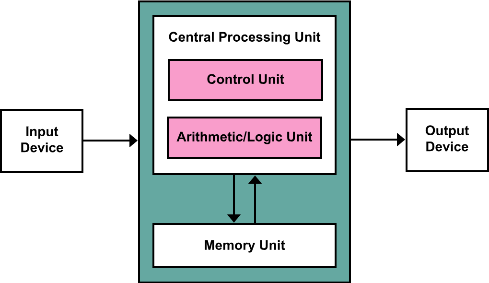

Microcorruption is a browser-based "Capture The Flag" (CTF) competition that focuses on embedded security. Unlike typical web or network-based CTFs, this challenges players to reverse-engineer and exploit a fictional piece of hardware: the LockIT Pro. Our role of this contest is the attacker trying to bypass the security of a smart lock system. The goal of each level is to find an input (a password or a specific sequence of bytes in hex code) that unlocks the device
It features a fully functional, in-browser debugger that simulates the device. You are given the:

User interface of Microcorruption
Microcorruption provides a good understanding to you to master the fundamentals of how a CPU actually works. Key learning outcomes include:
The CTF runs on an emulator for the MSP430, a real-world, ultra-low-power 16-bit RISC mixed-signal microcontroller produced by Texas Instruments. It is widely used in industrial sensors, utility meters, and simple embedded devices, making the skills learned here directly applicable to real IoT security. The MSP430 uses Von Neumann architecture, meaning code and data share the same address space. This is a critical detail for exploitation, as it allows attackers to inject executable code into data buffers (if not protected). Being a 16-bit system means addresses are 2 bytes long. This simplifies the math compared to 32-bit or 64-bit systems but introduces unique constraints on payload size and addressability.

Von Neumann architecture (Image source)
The MSP430 assembly syntax typically follows the OPERATION SOURCE DESTINATION format.
Ex: mov #0x10, r15 moves the hex value 0x10 into register r15.
There are 16 registers.
Key instructions to keep in mind:
cmp #0x8, r14. Z flag will be set to 1, if both values are equal. N flag will be set to 1, if destination is smaller than the sourceThe solutions for the challenges are discussed in the following sections